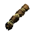
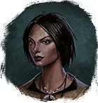

Сухожилие песика
Предметы / С врагов
Открыть в интерактивной вики →
| Вес | 4 |
|---|---|
| Цена | 2 |
Описание
Компонент, используемый для изготовления  Малая Фляга Уничтожения. Её создает
Малая Фляга Уничтожения. Её создает
Малая Фляга Уничтожения. Её создает 
Лейла в порту Трентиса.| Ингредиент для изготовления Малой фляги разрушения. Изготавливает Лейла в Порту. |
Дроп
Применение
|
Как добыть
Получаем за победу над:
|